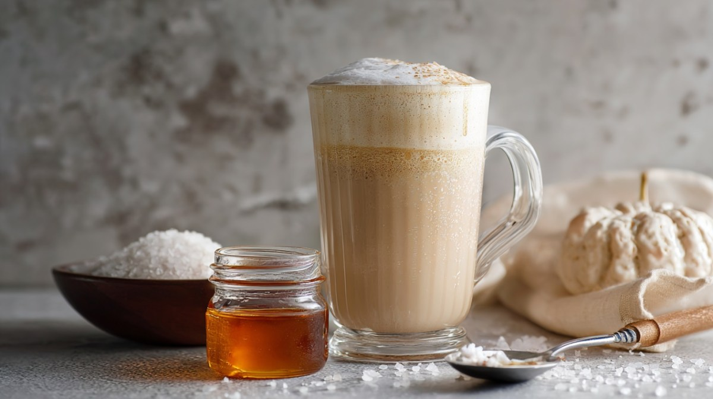

Maple Sea Salt Latte

Description
A salty and sweet maple sea salt latte.
Ingredients
- 1/2 or 1/4 cup steamed heavy cream or milk of choice
- 2 shots brewed espresso
- 2 teaspoons flaky sea salt
- 1 tablespoon maple syrup
- 1 teaspoon instant coffe
Steps
- Steam your milk of choice first. Brew the espresso and
pour the espresso into a mug.
- Add the flaky sea salt to the brewed espresso and stir.
- Add the maple syrup to the brewed espresso and stir.
- Pour in the steamed milk and combine with the espresso.
- Top with a teaspoon of instant coffee and more flaky sea salt, sip, and enjoy!
Home